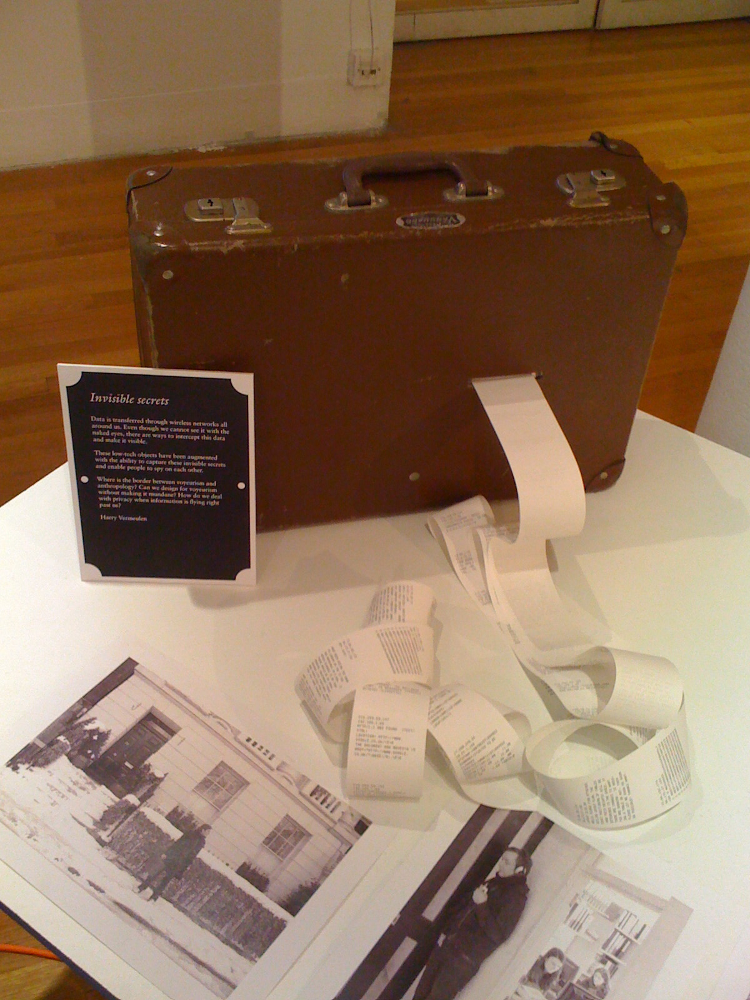

Invisible Secrets
Data is transferred through wireless networks all around us. Even though we can not see it with our bare eyes, there are ways to intercept this data and make it visible.
These low-tech objects have been augmented with the ability to capture these invisible secrets and enable people to spy on each other.
Where is the border between voyeurism and anthropology? Can we design for voyeurism without making it mundane? How do we deal with privacy when information is flying right passed us?
